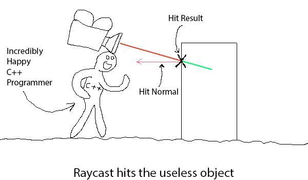
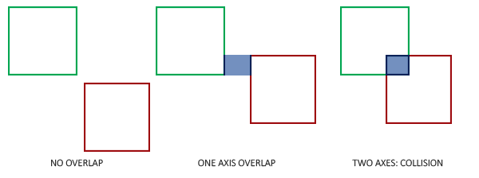

Collision Detection
In games, collection detection is used to perform an action when two objects collide with something in the game world. Without collision detection, objects would fall through the ground and would make for an odd experience.
In modern game engines, there are a few approaches to detecting collisions. Typically, these are all available for use in modern engines.
1. Ray-casting is a term used more in the 3D realm. It works by casting a "ray" in a direction and detecting if it is blocked by anything. This method is fairly quick for detecting collisions. However, it cannot easily detect overlap of objects. In addition, it cannot detect collisions in an arc for example detecting a hit from a sword swing would not be a good use case.

2. Collision Box detection is typically used for movement and larger objects. It works by drawing a series of boxes around a game object. These invisible boxes are then overlapped with nearby game objects to see if they occupy the same space.

Reference: https://www.toptal.com/game/video-game-physics-part-ii-collision-detection-for-solid-objects